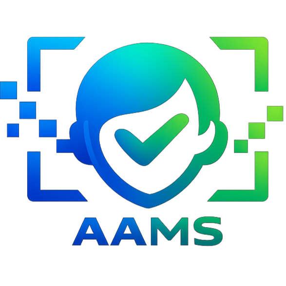
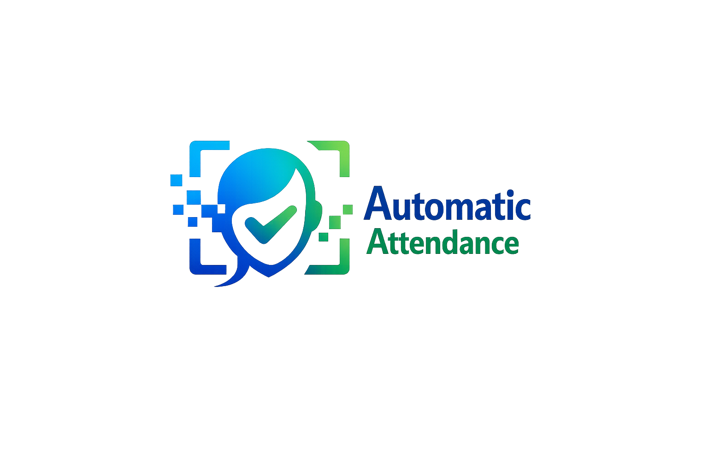

Register Students
Create verified student profiles with institution details and face data ready for attendance sessions.

AAMS
Automatic Attendance Management System
AAMS brings student registration, face based attendance, live records, reporting, and an AI assistant into one focused institution workspace.
Today
94% present rateActive
312 studentsBuilt like a product suite
AAMS as a complete campus platform: clear product navigation, compact features, module entry points, and fast routes into login and registration.
Create verified student profiles with institution details and face data ready for attendance sessions.
Use recognition assisted workflows to reduce manual roll calls and keep classroom activity moving.
Review semester, department, and student summaries without digging through disconnected sheets.
AAMS modules
Fast daily operation
AAMS keeps the daily flow simple: enroll students, start attendance, verify records, and export useful summaries for faculty and administrators.
Register students, departments, semesters, and admin users.
Capture attendance with recognition assisted marking.
Review summaries, spot absences, and generate reports.
Ready for campus use